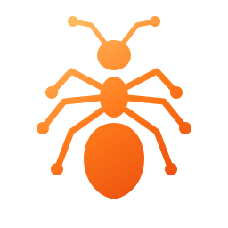
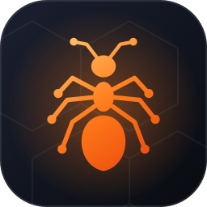

Nemla · نملة · נמלה is a small ant that walks your network and reports back. The identity keeps that idea simple: a warm ember colour on a deep night background, and an ant whose legs end in network nodes.
Discover · Scan · Fingerprint · Reportاكتشاف · فحص · تخمين · تقريرגילוי · סריקה · זיהוי · דיווח
01 · LogoThe mark
Three body segments (head, thorax, abdomen), six legs and two antennae. Every leg and antenna ends in a node: the ant is also a network graph. It is built from round strokes only, so it stays crisp from 16 px to a poster.

Primary mark
Ember gradient on a dark background. nemla_ui/web/brand/nemla-mark.svg
Lockup
Mark plus a hand-drawn monoline wordmark. The l carries the amber accent. nemla-logo.svg
One colour
Uses currentColor, so it follows the surrounding text colour. nemla-mark-mono.svg

256643216
App icon
Used for the Linux applications menu and the browser tab. nemla-icon.svg
02 · ColourEmber on night
Nemla was already orange; the identity keeps that and gives it depth. Ember is the only warm colour and always means "Nemla is acting". Everything else is a calm night blue-black, plus a small set of signal colours for service types.
Pheromone gradient · #FFC46B → #FF7A1A → #E8460C
Ember#FF7A1APrimary. Actions, the logo, the active scan.
Amber#FFC46BHighlights and the top of the gradient.
Deep ember#E8460CBottom of the gradient, pressed states.